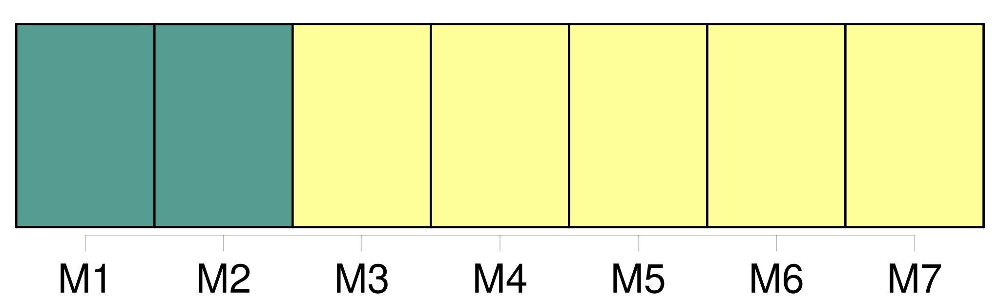
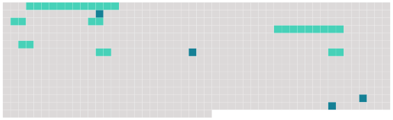

Longueur nb maillons : 11 mentions |
  |
Paragraphe 2 : [Habilitation des agents des douanes chargés de certaines missions de police judiciaire]
Pour chacun de ces agents, une demande d' [habilitation] est adressée au procureur général près la cour d'appel de Paris par le magistrat délégué aux missions judiciaires de la douane.
Article R15-33-8
Lorsqu'il envisage de refuser [l'habilitation] , il en informe l'intéressé en lui précisant qu'il peut, dans un délai de quinze jours, prendre connaissance de son dossier et être entendu, le cas échéant, avec l'assistance d'un conseil de son choix.
Article R15-33-9 [1 phrases] L'agent des douanes dont [l'habilitation] a été suspendue recouvre de plein droit, à l'expiration de la suspension, la faculté d'exercer des missions de police judiciaire sur réquisition de l'autorité judiciaire. [1 phrases]
Après un retrait, [l'habilitation] ne peut être rétablie que dans les formes prévues pour [son] attribution initiale.
L'affectation en dehors du service national de douane judiciaire entraîne la perte de [l'habilitation] [7 phrases]
Ce dossier comprend notamment : |
 |
La ressource peut être téléchargée sur la page Ortolang
Si vous avez des questions ou vous voyez des erreurs, merci d'envoyer un mail à silvia.federzoni89@gmail.com
Site développé par S. Federzoni (contact)